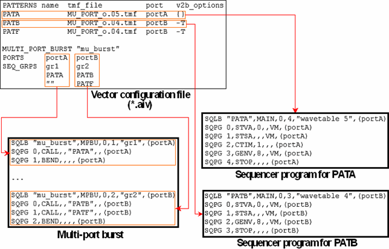

Bursts and Multi-Port Bursts
Bursts and multi-port bursts must be defined in the vector configuration file. Thus,
they can only be generated with the high level tool aiv, not with
v2b. The BURST statement of the vector configuration file has
the following format:
BURST <name> <wavetable> <pattern_1> <pattern_2> ... <pattern_n>
The BURST statement in the vector configuration file is created automatically
by the timing translation from the BURST statement in the global configuration
file (see Structure of the GROUPS Statements). The two statements differ in that the
NCT/CT attribute is no longer present in the vector
configuration file (this information has been converted into parameters of
v2b), and that a wavetable is associated with it instead.
The MULTI_PORT_BURST statement serves to generate a multi-port burst in the
binary vector file. Its general format is:
MULTI_PORT_BURST "<burst_name>"
PORTS <port_1> <port_2> ... <port_n>
[SEQ_GRPS <group_1> <group_2> ... <group_n>]
<pat_1_1>|"" <pat_2_1>|"" ... <pat_n_1>|""
<pat_1_2>|"" <pat_2_2>|"" ... <pat_n_2>|""
...
The MULTI_PORT_BURST statement in the vector configuration file is generated
automatically by the timing translation from the MULTI_PORT_BURST statement in
the global configuration file (see The MULTI_PORT_BURST Statement). If you create the vector
configuration file manually, observe the following points:
- The ports of the
PORTSrow must not overlap, that is, no pin must belong to more than one of these ports. - The patterns specified for the individual ports must be defined for the respective port in
the
PATTERNSsection. - If the number of patterns is not the same for all the ports, the place holder "" must be used to inform aiv which patterns belong to which column.
- The
SEQ_GRPSrow, which specifies the sequencing groups for the ports, is optional. If theMULTI_PORT_BURSTstatement is created by the timing translation, this row is copied from the global configuration file. If you create the vector configuration file manually and specify aSEQ_GRPSrow, you must take care that the specified sequencing groups are compatible with those defined in the timing setup.
The following figure shows how a MULTI_PORT_BURST statement in the vector
configuration file is translated into a multi-port burst in the binary vector file. It also shows
the sequencer programs of two of the patterns; note that every command of the program has the
port of the respective pattern as its last parameter. For more information on the sequencer
program, see General Overview of Pattern Structure and Parallel Vector Translation.

The timing translation for this example is shown in Generating the Specification and the Vector Configuration File.
Functional changes
- Introduced before SmarTest 6.3.2